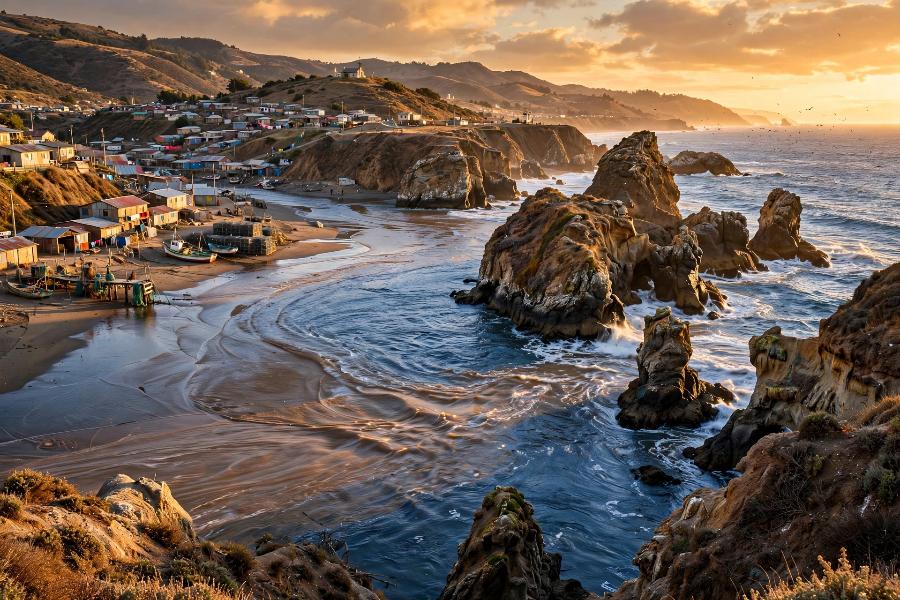

Constitución, Chile
| Constitución | |
 | |
| Country | Chile |
|---|---|
| Region | Maule |
| Province | Talca |
| Founded | 18 June 1794 (as Villa Nueva Bilbao) |
| Population | c. 41,000 (2017 census, commune) |
Constitución is a city and commune in the Talca Province of Chile's Maule Region, located on the south bank of the mouth of the Maule River on the Pacific coast, about 90 km west of the regional capital Talca.
History
The settlement was founded on 18 June 1794 as Villa Nueva Bilbao de Gardoqui under Governor Ambrosio O'Higgins. In 1828 it was renamed Constitución because the Chilean Constitution of 1828 was proclaimed there. Historically the port was the shipping point for wheat and timber from the Maule valley, reached from the interior by the last remaining Chilean ramal (branch-line) train, the Talca–Constitución railway, famous for its railbus service.
2010 earthquake and tsunami
Constitución was devastated by the tsunami following the 27 February 2010 earthquake; the surge travelled up the Maule River and destroyed much of the waterfront and the island of Isla Orrego, where many people had gathered for a festival, causing heavy loss of life.
Geography and economy
The coast near the city features dramatic rock formations such as the Piedra de la Iglesia ("Church Rock"). The local economy rests on forestry and cellulose (a large ARAUCO pulp mill), fishing, agriculture, and beach tourism at resorts along the Maule coast.
See also
Recreated from memory as a standalone page.